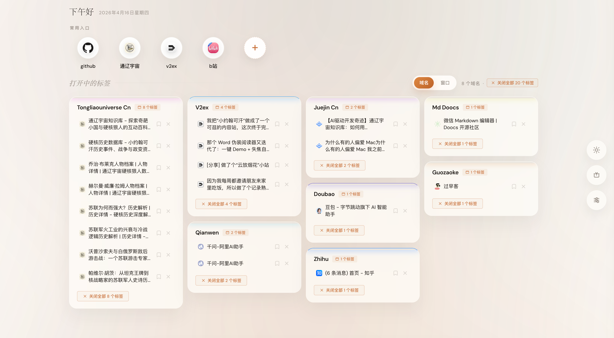
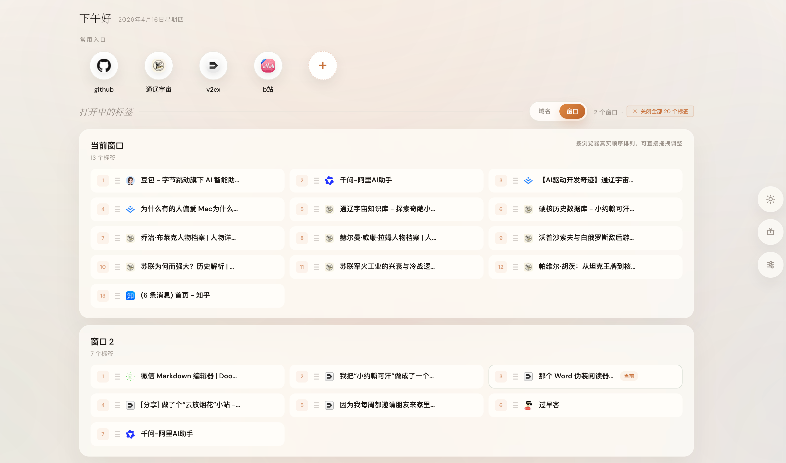
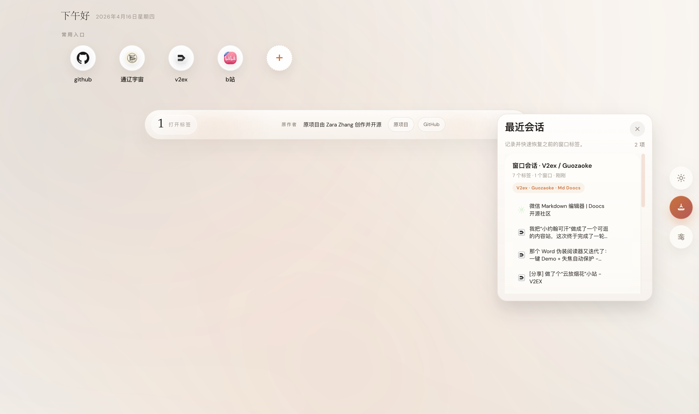

See open tabs immediately and close one tab, a whole group, or duplicate clutter in just a few clicks.
TabNest
Close tabs fast. Stay in control.
TabNest turns Chrome's new tab page into a calm control center for tab cleanup, grouped browsing, session recovery, and everyday focus.
Built for quick tab cleanup
Close single tabs, grouped tabs, and duplicates without digging through crowded tab strips.
Recover your workflow later
Stash windows into sessions, restore them when needed, and keep your browser context organized.
What makes TabNest useful
The extension starts with a practical promise: help you close messy tabs faster. Then it adds window view, session stash, and quick links so cleanup does not break your flow.
Switch between grouped domain cleanup and a browser-accurate window view depending on how you want to work.
Stash the current window or multiple windows, then reopen the exact browsing context later when you are ready.
Save quick links, choose your theme, and keep the new tab page useful instead of empty.
Product screenshots
Put your store screenshots in site-assets/screenshots/. This page is already wired to display the three files below.


